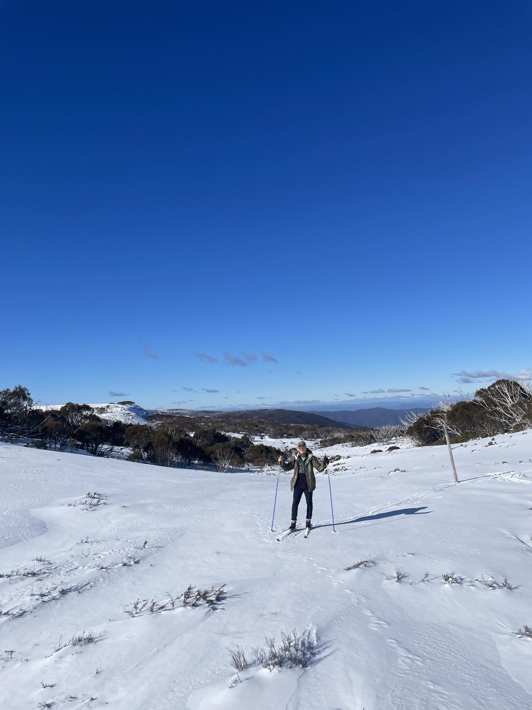
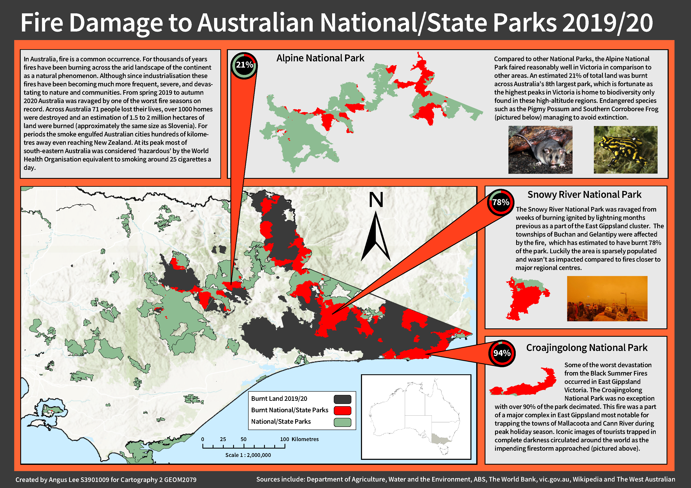
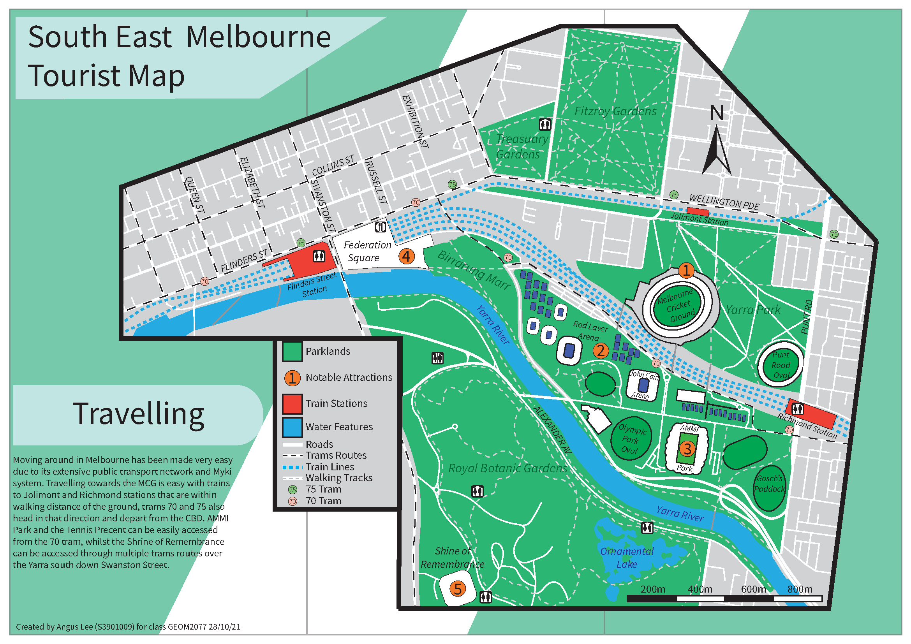
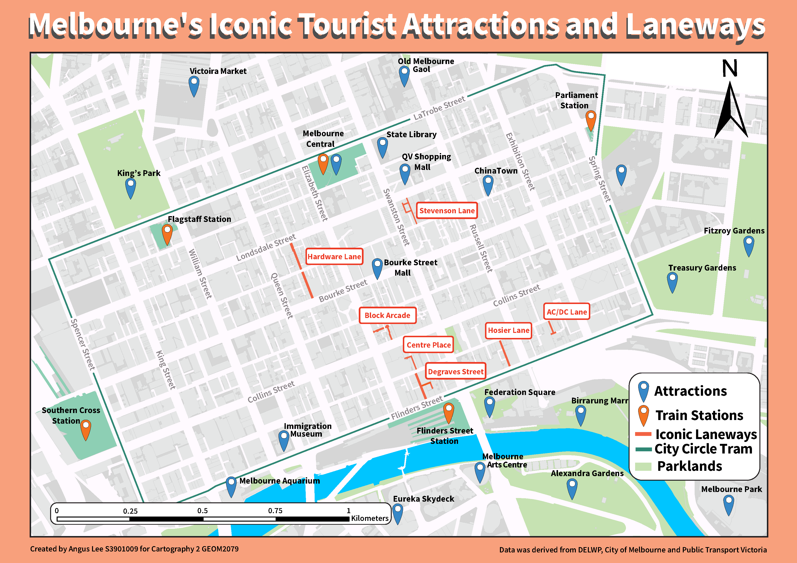
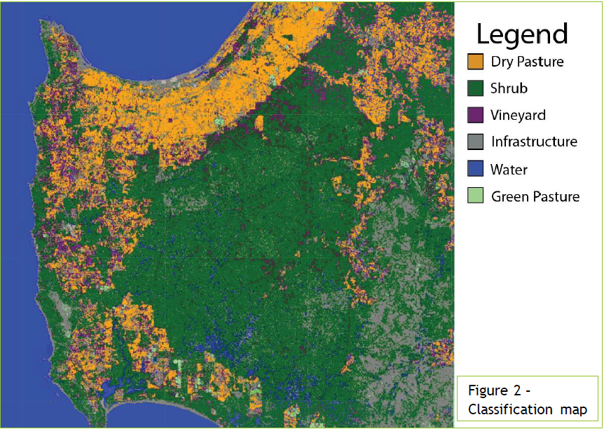
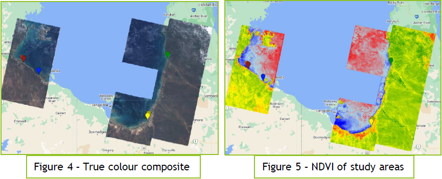
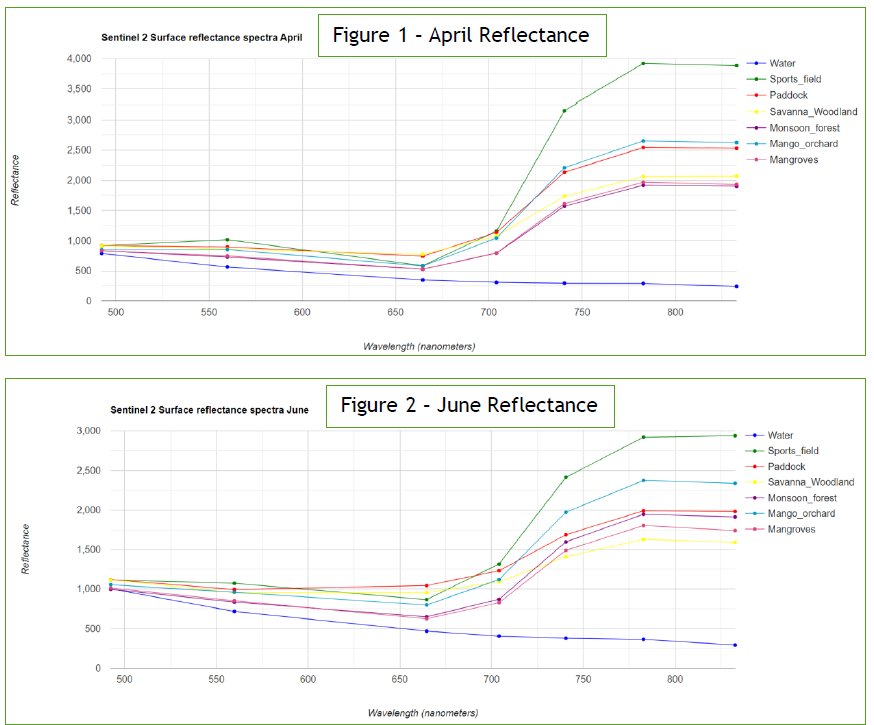

Geoportfolio
Angus Lee
About
This website is the geoportfolio of Angus Lee. The website entails
information that is academically and profesionally related to the field of geospatial science
A brief introduction about myself is that I am born and raised in Mount Beauty, Victoria and moved to Melbourne
to complete my Bachelor of Applied Science (Surveying) (Honours). I am currently in my final year of my studies
and work part time as an engineering surveyor. My area of expertise within the geospatial/surveying fields is
remote sensing this is an area of interest for me and hence have chosen the discipline for my Capstone honours
project "Mapping Snow Cover Changes in the Bogong High Plains using Remote Sensing". Working in the engineering
realm of surveying is in my career interests as I seek to continually improve as a field technician.
Outside of surveying spend the majority of my time outside including running ultra marathons, playing aussie rules,
mountain biking or snowboarding. These activities keep me sane during my studies, upon graduation I am also looking
forward to some international travelling!

Academic Portfolio Overview
Capstone Project Poster

Cartography
The two cartography classes I completed during my course were some of the most enjoyable during my time at RMIT.
The classes involved a split between theoretical and practical elements of mapmaking and introduced students to
fundamental knowledge about projections, distortions and using maps to tell a story. Some of the maps I created:
- Final Cartography 1 Map: Mapping key attractions in south east melbourne
- Practical 2: Mapping Melbourne's iconic tourist attractions and laneways
- Final Cartography 2 Map: Thematic map of the 2019/20 bushfires
Below are the three maps that I have created as part of the courses:
Note: If map display is too small, right-click the image and 'Open in new tab' to allow zooming of the map.
Busfire damage from the 2019/20 summer

Key attractions in south east Melbourne

Melboune CBD most popular laneways and attractions

Earth Observation Science
Earth Observation Science was a very unique and interesting class in the geospatial science domain.
The class provided knowledge for students learn how to extract a variety of different geographic
data sources from satellite and drone imagery. The subject uses knowledge from three different disciplines:
- Remote sensing
- Geographical Information Systems (GIS)
- Data analyses
During the course we were required to complete several practicals and reports which I found to be challenging
but thoroughly rewarding. Below are some outputs I created within the course that helped get me interested in this study area:
- Mapping mangrove dieback and extracting data from NDVI
- Classified map I created in south west WA
- Reflectance graphs of different landcover types
Note: If map display is too small, right-click the image and 'Open in new tab' to allow zooming of the map.
South West WA classification map

Using NDVI to map mangrove dieback

Reflectance curve for landcover types

Industry Experience
This page will briefly cover all my work experience (as of August 2024) within the geospatial science industry.
Since moving to Melbourne, I have only worked in the civil engineering sector as a surveyor having previously
worked in retail for 2.5 years. This page will outline the skills I gained working as a survey cadet for Fulton Hogan
over the last 14 months.
Fulton Hogan
Survey Cadet
June 2023 - current
I have thoroughly enjoyed my time at Fulton Hogan, I have learnt a lot about the civil engineering and surveying fields
and it has set me up well to transition into fulltime work upon graduation. My key skills that are most relevant to this
field are a wealth of knowledge obtained inside the 12d Model and Synergy packages. At my current 14-month stint as a
Survey Cadet for Fulton Hogan I have obtained a suite of experience across several Level Crossing Removal Project (LXRP)
sites which involves working independently in the field conducting several survey tasks including but not limited to:
Total station and GNSS instrument work
Adding and adjusting control networks
Road layer conformance and reporting
Setout of structures, roads, utilities etc
As-built of roads, drainage, utilities and bridge structures etc
Rail and retaining wall monitoring
Data processing and mapping
12d office and field expertise
Skills and Proficiencies
|
12d Synergy |
|
12d Model |
 |
Google Earth Engine |
 |
Adobe Illustrator |
 |
Auto CAD |
 |
ArcGIS Pro |
 |
Surveying field procedures |
|
Liscad surveying software |
 |
JavaScript Programming |
 |
Microsoft Office suite |
Credits and Attributions
The following programming languages and software were used to create the website
- HTML
- CSS
- JavaScript
- Visual Studio Basic
The deliverables contains content from the following subjects:
- Cartography 1 and 2 (GEOM2150) (GEOM2210)
- Earth Observation Science (GEOM2350)
Special thanks to the following people who have helped me make this website with their expertise and guidance: